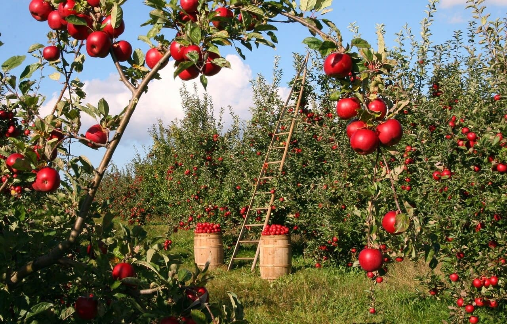

A alimentação sustentável é uma forma de contribuir para a preservação do meio ambiente por meio das escolhas que fazemos em nosso prato. Neste artigo, exploraremos diferentes ações que podemos tomar para transformar o mundo por meio da alimentação, adotando práticas mais conscientes e amigas do ambiente.
Uma das principais ações que podemos tomar para promover a alimentação sustentável é optar por alimentos orgânicos, esses alimentos são cultivados sem o uso de agrotóxicos e fertilizantes químicos, o que reduz a contaminação do solo, da água e do ar, além disso, os alimentos orgânicos geralmente são produzidos de maneira mais sustentável, utilizando técnicas que preservam os recursos naturais e a biodiversidade.
Ao escolher alimentos de origem local, estamos contribuindo para a redução das emissões de gases de efeito estufa causadas pelo transporte de longa distância, além disso, os alimentos locais geralmente são mais frescos, pois não precisam passar por longos períodos de armazenamento e transporte, essa escolha também ajuda a fortalecer a economia local e a apoiar os agricultores da região.
A produção de carne tem um grande impacto ambiental devido ao desmatamento, à emissão de gases de efeito estufa e ao consumo excessivo de água, uma das formas mais eficazes de fazer escolhas amigas do ambiente no seu prato é reduzindo o consumo de carne, especialmente de carne vermelha, optar por refeições à base de vegetais, como legumes, frutas, grãos e nozes, pode ajudar a reduzir a pegada ambiental da sua alimentação.
O desperdício de alimentos é um problema global que contribui significativamente para o impacto ambiental, ao evitar o desperdício, estamos não apenas economizando recursos, mas também reduzindo a quantidade de resíduos que vão parar em aterros sanitários, planejar as refeições, comprar apenas o necessário, armazenar corretamente os alimentos e reaproveitar sobras são algumas das práticas que podemos adotar para combater o desperdício alimentar.
Além dos alimentos orgânicos, existem outras certificações e selos que podem nos ajudar a identificar produtos de produção sustentável. Por exemplo, o selo Fair Trade indica que o alimento foi produzido com respeito aos direitos humanos e às condições de trabalho justas, já o selo Rainforest Alliance certifica produtos provenientes de áreas de cultivo que cumprem critérios socioambientais, promovendo a conservação da biodiversidade e o bem-estar das comunidades locais.
Uma forma direta de transformar o mundo por meio da alimentação é cultivando seus próprios alimentos, mesmo que você tenha pouco espaço disponível, é possível plantar ervas, temperos ou vegetais em vasos ou jardineiras, além de garantir alimentos frescos e livres de agrotóxicos, o cultivo caseiro promove uma maior conexão com a natureza, o desenvolvimento de habilidades e a redução da pegada ambiental relacionada ao transporte e à embalagem dos alimentos.
Além de consumir alimentos locais, podemos apoiar iniciativas locais de agricultura sustentável, isso pode ser feito por meio da participação em feiras de produtores locais, cooperativas agrícolas ou programas de CSA (Agricultura Apoiada pela Comunidade), essas iniciativas promovem práticas sustentáveis de produção e fortalecem os laços entre produtores e consumidores, proporcionando alimentos saudáveis, frescos e de qualidade.
A alimentação sustentável é uma poderosa forma de transformar o mundo, ao adotar práticas como o consumo de alimentos orgânicos, o apoio a produtores locais, a redução do consumo de carne e a redução do desperdício alimentar, estamos fazendo escolhas que têm um impacto positivo no meio ambiente, cada pequena ação conta e, juntos, podemos promover uma alimentação mais consciente e amiga do ambiente, contribuindo para a preservação do planeta e para a construção de um futuro sustentável.